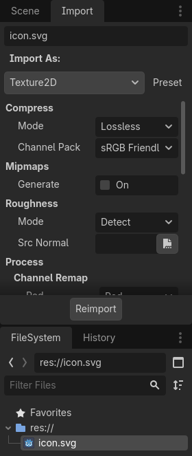
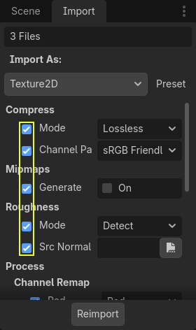
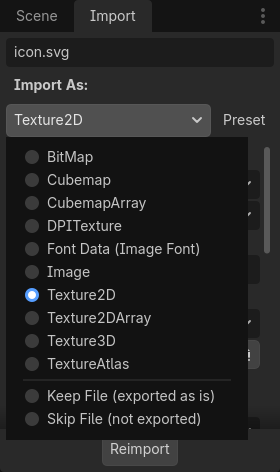
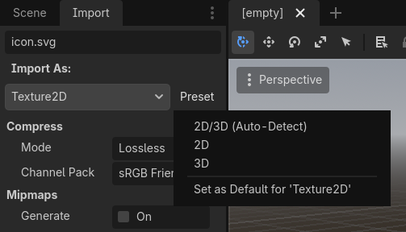
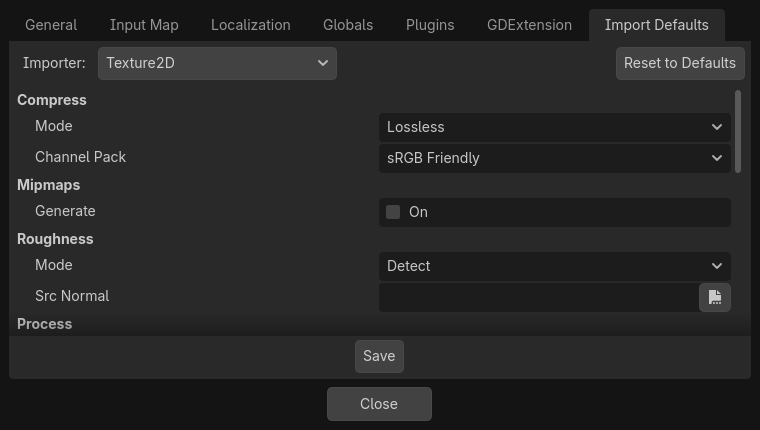

Quy trình import
Import asset trong Godot
Để import asset vào Godot, hãy đặt asset (tệp ảnh, scene, tệp âm thanh, font, v.v.) trực tiếp vào thư mục dự án. Có 2 cách để làm điều này:
Với mọi loại tệp: Sao chép tệp thủ công bằng trình quản lý tệp của hệ điều hành.
Với các loại tệp mà Godot có thể import: Kéo và thả tệp từ trình quản lý tệp của hệ điều hành vào FileSystem dock của trình chỉnh sửa. Cách này chỉ hoạt động với các loại tệp resource (tức là các loại tệp mà Godot có thể import).
Godot sẽ tự động import các tệp này ở bên trong và giữ các resource đã import ẩn trong thư mục res://.godot/imported/.
Điều này có nghĩa là khi truy cập asset đã import qua mã, bạn cần dùng Resource Loader vì nó sẽ tự động tính đến vị trí lưu các tệp nội bộ. Nếu bạn cố truy cập asset đã import bằng lớp FileAccess, nó sẽ hoạt động trong trình chỉnh sửa, nhưng sẽ lỗi trong dự án đã xuất.
Tuy nhiên, Resource Loader không thể truy cập các tệp không được import. Chỉ lớp FileAccess mới làm được.
Thay đổi tham số import
Ghi chú
Tham số import chỉ có ở các loại resource không phải gốc của Godot. Điều này có nghĩa là các định dạng tệp scene và resource riêng của Godot (.tscn, .scn, .tres, .res) không có tùy chọn import nào để bạn chọn trong Import dock.
Để thay đổi tham số import của một asset trong Godot, hãy chọn resource tương ứng trong FileSystem dock:

Sau khi điều chỉnh tham số, nhấp Reimport. Hãy cẩn thận: nếu bạn chọn một tệp khác trong FileSystem dock trước khi nhấp Reimport, các thay đổi sẽ bị hủy. Sau khi nhấp Reimport, các tham số đã chọn sẽ chỉ được dùng cho asset này và cho các lần reimport sau.
Bạn cũng có thể thay đổi tham số import của nhiều asset cùng lúc. Hãy chọn tất cả chúng trong FileSystem dock và các tham số hiển thị sẽ được áp dụng cho tất cả khi reimport.
Reimport nhiều asset
Khi làm việc với một dự án, bạn có thể thấy nhiều asset cần thay đổi cùng một tham số, chẳng hạn bật mipmap, nhưng bạn chỉ muốn thay đổi đúng những tham số đó. Để làm điều này, hãy chọn mọi asset bạn muốn reimport trong hệ thống tệp. Lúc này, trong tab import sẽ có một ô đánh dấu ở bên trái mỗi tham số import.

Đánh dấu ô của các tham số bạn muốn thay đổi trên các asset đã import, rồi thay đổi tham số như bình thường. Cuối cùng, nhấp nút reimport và mọi asset đã chọn sẽ được reimport với chỉ những tham số đó được thay đổi.
Tự động reimport
Khi checksum MD5 của asset nguồn thay đổi, Godot sẽ tự động reimport asset đó, áp dụng preset đã cấu hình cho riêng asset đó.
Bỏ qua các thư mục cụ thể
Đôi khi bạn có những tệp không muốn Godot import, chẳng hạn ảnh dùng trong bộ tài liệu báo chí (press kit) hoặc tài liệu quảng bá của game. Bạn có thể đặt các tệp đó vào một thư mục mà bạn yêu cầu Godot bỏ qua. Việc bỏ qua một thư mục đảm bảo Godot không import nó; đồng thời thư mục đó cũng bị ẩn khỏi FileSystem dock. Bỏ qua một thư mục cũng khiến nội dung của nó không được xuất cùng dự án, nhờ đó giảm kích thước PCK khi xuất.
Xem Bỏ qua các thư mục cụ thể trong bài hướng dẫn tổ chức dự án để biết chi tiết.
Các tệp được tạo ra
Việc import sẽ thêm một tệp <asset>.import bên cạnh tệp nguồn, chứa cấu hình import.
Hãy nhớ commit các tệp này vào hệ thống quản lý phiên bản, vì chúng chứa siêu dữ liệu quan trọng.
ls
example.png
example.png.import
project.godot
Ngoài ra, các asset bổ sung sẽ có mặt trong thư mục ẩn res://.godot/imported/:
ls .godot/imported
example.png-218a8f2b3041327d8a5756f3a245f83b.ctex
example.png-218a8f2b3041327d8a5756f3a245f83b.md5
Nếu bất kỳ tệp nào trong thư mục này bị xóa (hoặc cả thư mục), một hoặc nhiều asset tương ứng sẽ được tự động reimport. Do đó, không nên commit thư mục .godot/ vào hệ thống quản lý phiên bản. Dù việc commit thư mục này có thể rút ngắn thời gian reimport khi checkout trên máy tính khác, nó đòi hỏi nhiều dung lượng và băng thông hơn đáng kể.
Siêu dữ liệu quản lý phiên bản mặc định có thể được tạo khi tạo dự án sẽ tự động bỏ qua thư mục .godot/.
Thay đổi loại resource khi import
Một số asset nguồn có thể được import thành các loại resource khác nhau. Để làm vậy, hãy chọn loại resource mong muốn rồi nhấp Reimport:

Chọn Keep File (exported as is) làm loại resource để bỏ qua việc import tệp; các tệp có loại resource này sẽ được giữ nguyên khi xuất dự án.
Chọn Skip File (not exported) làm loại resource để bỏ qua việc import tệp và bỏ qua tệp khi xuất dự án.
Thay đổi tham số import mặc định
Các loại dự án khác nhau có thể cần giá trị mặc định khác nhau. Bạn có thể đổi các tùy chọn import sang một bộ tùy chọn định sẵn bằng menu Preset.... Ngoài việc một số loại resource cung cấp preset, các cài đặt mặc định cũng có thể được lưu và xóa:

Tham số import mặc định cho một loại resource có thể được thay đổi trên toàn dự án bằng tab Import Defaults của hộp thoại Project Settings:

Đọc thêm
Quy trình làm việc này cần chút thời gian để làm quen, nhưng nó buộc bạn xử lý resource theo cách đúng đắn hơn.
Có rất nhiều loại asset có thể import. Hãy đọc tiếp để hiểu cách làm việc với tất cả chúng: